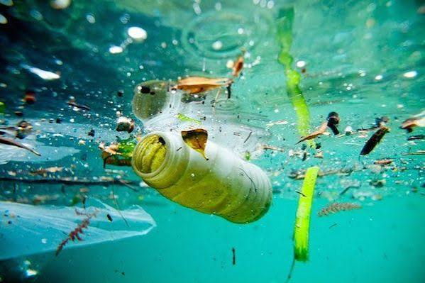
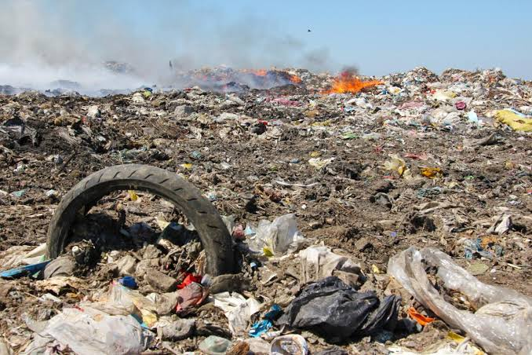

La contaminacion es un problema que afecta al medio ambiente y a todos los seres vivos.
Se produce cuando existen sustancias dañinas en el aire, el agua o el suelo.

Existen diferentes tipos de contaminacion, como la contaminacion del aire, del agua y del suelo.
La contaminacion del aire puede ser causada por el humo de los vehiculos y las fabricas. La contaminacion del agua ocurre cuando se arrojan residuos a los rios, lagos y mares.
Podemos ayudar a reducir la contaminacion evitando tirar basura, reciclando y cuidando los recursos naturales.
Ir a Google